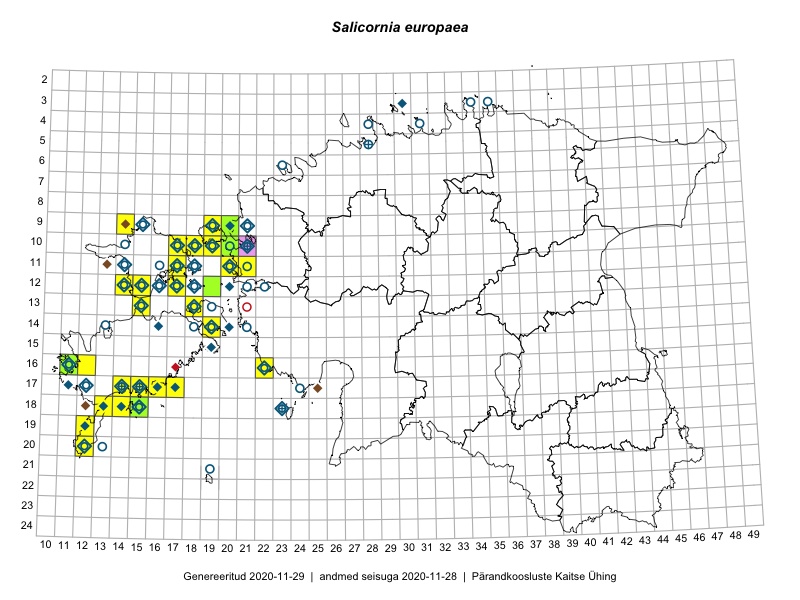

Salicornia europaea
Uuendatud: 2016-12-07
Kaardile koondatud taksonid: Salicornia europaea L.

Kaart põhineb 23 vaatlusel. Taime on leitud 13 ruudust.
| Ruut | Vaatleja(d) | Vaatlusaeg | Kirje tüüp | Viide andmebaasikirjele |
|---|---|---|---|---|
| 11-17 | Peedu Saar, Toomas Kukk | 2015-05-28 | ruut/ala | vaata PlutoFis |
| 16-11 | Toomas Kukk, Peedu Saar, Kersti Tambets | 2015-08-06 | punkt | vaata PlutoFis |
| 18-15 | Toomas Kukk | 2014-06-18 | ruut/ala | vaata PlutoFis |
| 18-15 | Toomas Kukk | 2014-06-18 | punkt | vaata PlutoFis |
| 19-12 | Oliver Parrest | 2015-08-18 | ruut/ala | vaata PlutoFis |
| 16-11 | Triin Reitalu, Mari Reitalu | 2015-08-09 | ruut/ala | vaata PlutoFis |
| 18-13 | Oliver Parrest | 2015-07-15 | ruut/ala | vaata PlutoFis |
| 20-12 | Oliver Parrest | 2015-08-15 | ruut/ala | vaata PlutoFis |
| 16-11 | Sirje Azarov, Mari Reitalu | 2015-06-22 | ruut/ala | vaata PlutoFis |
| 18-15 | Mari Reitalu | 2014-07-17 | ruut/ala | vaata PlutoFis |
| 19-12 | Ott Luuk, Mari Reitalu, Thea Kull | 2014-05-23 | ruut/ala | vaata PlutoFis |
| 11-21 | Hanna-Eliisa Luts, Tõnu Ploompuu | 2015-08-13 | ruut/ala | vaata PlutoFis |
| 16-11 | Mari Reitalu, Triin Reitalu | 2015-08-09 | ruut/ala | vaata PlutoFis |
| 11-20 | Hanna-Eliisa Luts, Tõnu Ploompuu | 2015-08-13 | ruut/ala | vaata PlutoFis |
| 12-17 | Thea Kull, Sander Laherand | 2016-08-11 | ruut/ala | vaata PlutoFis |
| 09-14 | Maret Gerz, Meeli Mesipuu | 2016-08-09 | punkt | vaata PlutoFis |
| 11-21 | Aat Sarv, Maret Gerz | 2016-07-07 | ruut/ala | vaata PlutoFis |
| 11-17 | Maret Gerz, Meeli Mesipuu | 2016-08-08 | ruut/ala | vaata PlutoFis |
| 12-15 | Toomas Kukk, Meeli Mesipuu | 2016-08-10 | ruut/ala | vaata PlutoFis |
| 12-14 | Toomas Kukk, Meeli Mesipuu | 2016-08-10 | ruut/ala | vaata PlutoFis |
| 18-13 | Mari Reitalu, Sirje Azarov | 2016-07-31 | ruut/ala | vaata PlutoFis |
| 14-19 | Meeli Mesipuu | 2016-06-29 | punkt | vaata PlutoFis |
| 09-14 | Meeli Mesipuu, Maret Gerz | 2016-08-09 | ruut/ala | vaata PlutoFis |